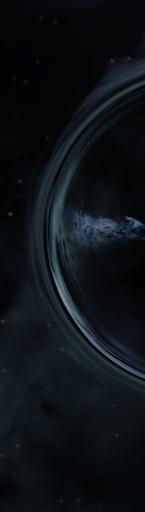
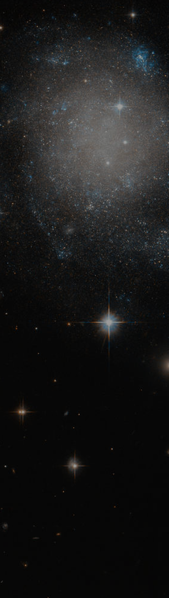
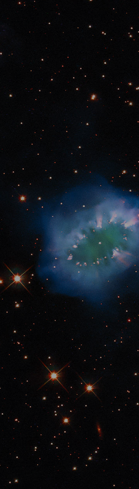

03. ETC
웜홀
블랙홀과 화이트홀을 연결하는 우주의 시간과 공간의 벽에 구멍
블랙홀이 회전할 때 만들어진다고 한다
수학적으로만 웜홀을 통한 여행이 가능
화이트홀 : 블랙홀과 반대로 뱉어내기만 하는 상태
웜홀과 화이트홀 둘 다 이론만 존재하는 상태
아인슈타인 '상대성이론' - 블랙홀, 웜홀은 존재한다.
과거 아인슈타인, 나단 로젠 / 새로운 개념의 웜홀 이론 발표
: 아인슈타인-로젠의 다리
블랙홀-웜홀-화이트홀
(최근엔 화이트홀보다 블랙홀이 유력한 편)
04. MORE
웜홀을 찾는 방법
1) 감마선
웜홀은 아주 밝은 은하 중심에 존재
그 중심에 존재하는 대량의 감마선을 찾는다.
빨려 들어가는 물질과 나오는 물질이 충돌하며 감마선 폭발
2) 중력
강력한 중력이 블랙홀에서만 나오는게 아닌, 웜홀에서도 나올 수 있다는 가능성 존재

03. ETC
퀘이사
가시 우주에서 가장 밝은 천체 중 하나
먼 곳에 있는 활동 은하 핵의 일종
현재 우리가 관측하는 퀘이사는 과거의 모습
(멀리 떨어진 천체일수록, 빛이 우리 눈에 도달하는데 시간이 걸림)
빅뱅 우주론의 유력한 증거
최근으로 올수록 퀘이사가 적게 발견
: 과거 우주와 현재 우주가 밀도 등의 면에서 달랐다는 사실
우주 초기에 비해 환경이 변하자 활동성을 잃음
더 이상 보이지 않게 되었다.
04. MORE
퀘이사의 에너지원은 초대질량 블랙홀
빠른 속도로 주변 먼지와 가스를 집어 삼킨다.
(초신성 - 중성자별, 백색왜성 등)
ULAS J1120+0641
: 현재까지 발견된 퀘이사 중 가장 먼 거리에 존재
태양의 20억배 질량을 가진 블랙홀이 에너지원
UL.27이라는 초거대 퀘이사군도 존재
사자자리 부근에서 발견

03. ETC
사라진 블랙홀
지금까지 발견된 모든 은하 중 가장 밝은 중심 핵
: 중심에 초거대 블랙홀이 있을 것이라 추측
존재한다면 현재 가장 큰 블랙홀인 TON 618보다 더 클 것으로 추측
하지만 관측할 수 없었음
: 블랙홀이 사라졌을 가능성
두 은하의 결합 - 에너지 폭발 - 블랙홀을 은하 중심에서 밀어냄